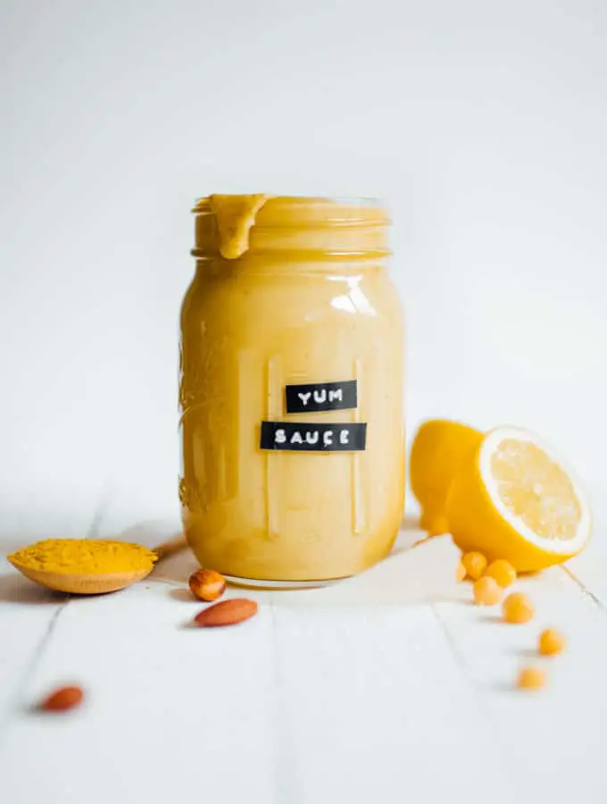

Yum Sauce

Description
Best sauce for grain bowls and dipping
Ingredients
- 1/2 cup chickpeas
- 1/2 cup nutritional yeast
- 1/2 cup sugar
- 1/2 cup silken tofu
- 1/4 slivered almonds
- 2 tbsp lemon juice
- 1/2 teaspoon salt
- 1/2 teaspoon curry powder (note: add way more)
- 2 cloves garlic
Steps
- Add all ingredients except chickpea juice to a blender. Blitz until smooth, slowly adding chickpea juice until you reach a thick, pourable consistency.
Bon Appetit!